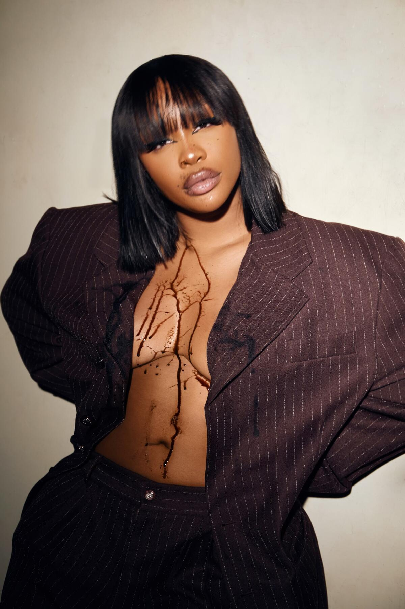

D's Favorite Songs
Breaking Point
By: Leon Thomas
I listen to this song when I want to hear soulful vocals from the core! I love this song because of its raw emotion, authentic r-and-b, and the meaningful lyrics.
 Leon Thomas III Talks Unleashing ‘mutt’ and Pushing R-and-B Forward, 2024 Grammys
Leon Thomas III Talks Unleashing ‘mutt’ and Pushing R-and-B Forward, 2024 Grammys
Changes
By: Tupac
I loved the song Changes since I was kid. This song holds a powerful message that is still prevelant to this day. Pac's lyrics tackle deep issues like racism and poverty, and his passionate delivery makes it personal.
 Tupac Shakur Britannica
Tupac Shakur Britannica
Another Life
By: SZA
Another Life by SZA, is a beautiful song. This recently came out on her deluxe album: SOS. I love this song because of the beautiful harmonies, vocal range, and overall melody.

MusicOn the dazzling ‘SOS,’ SZA spares no one, least of all herself latimes
Potential
By: Summer Walker
Potential made me like I am not the only one going through a certain situation. I felt powerful emotions from this song and I listen to song when I just wan to let it all out.
 Summer Walker Cover Art BY University Student Postermill
Summer Walker Cover Art BY University Student Postermill
No Role Modelz
By: J Cole
I love the song No Role Modelz, because it’s catchy, honest, and full of meaning. The beat is smooth, his flow is effortless, and the lyrics mix humor with real talk about relationships, fame, and the lack of true role models.
 J. Cole’s ‘2014 Forest Hills Drive’ Turns Five Tidal
J. Cole’s ‘2014 Forest Hills Drive’ Turns Five Tidal